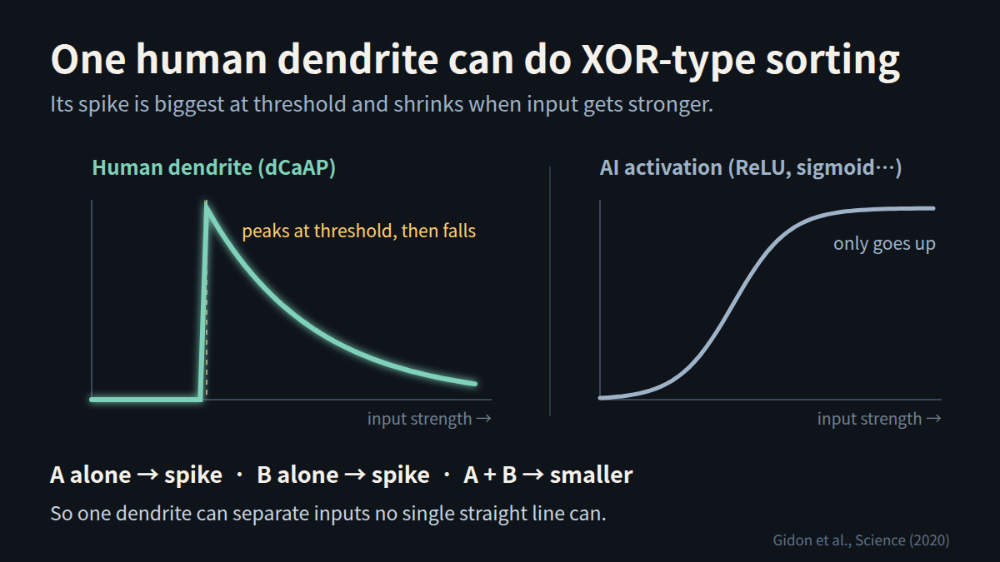
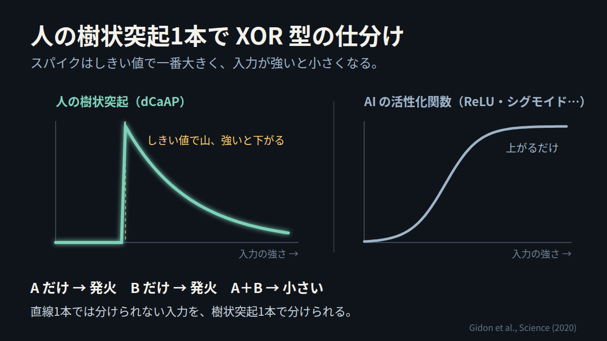

Conclusion. In human layer 2/3 cortical neurons, the dendrites fire a calcium spike (dCaAP) that is largest at threshold and gets smaller when the input gets stronger.
Why it matters. Because the response falls for strong input, one dendrite can classify inputs that no single straight line can separate (the XOR type). That kind of computation is usually thought to need a network with more than one layer.
For people who build AI. Common activation functions (ReLU, sigmoid) only go up. An activation that rises and then falls lets a single unit do what normally takes two layers.
結論：人の大脳皮質（2/3 層）のニューロンでは、樹状突起がカルシウムのスパイク（dCaAP）を出す。大きさはしきい値の所で一番大きく、入力が強いと小さくなる。
意味：強い入力で反応が下がるので、直線1本では分けられない入力（XOR 型）を、樹状突起1本で分けられる。ふつうは層が2つ以上のネットワークが要るとされる計算。
AIを作る人へ：よく使う活性化関数（ReLU・シグモイド）は上がるだけ。上がってから下がる関数なら、1個の単位で2層分の仕事ができる。
